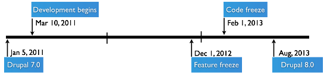
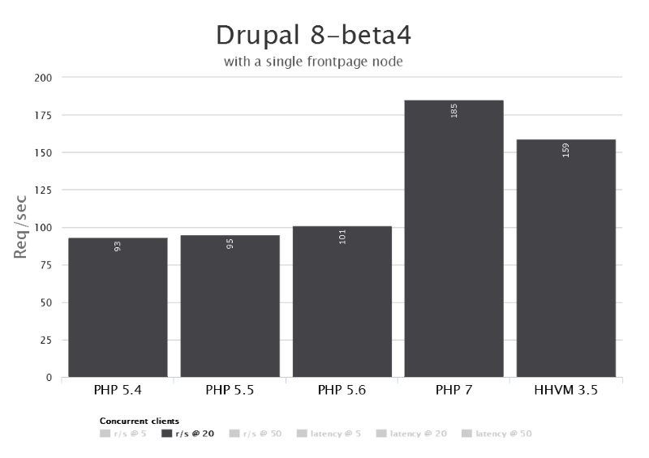
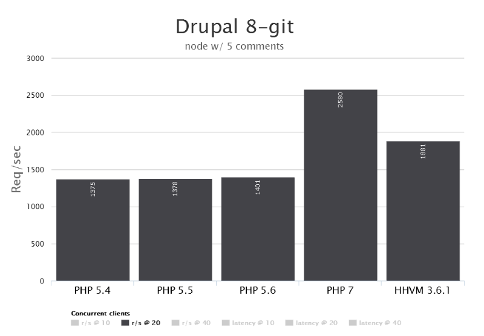
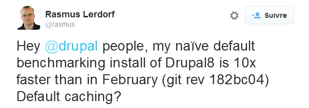

Drupal 8
The Good Parts (tm)
Par Quentin Delance / @qdelance
Présentation
qdelance ?
The Good Parts ?

Plan
- Contexte, Drupal, Drupal 8
- Les apports de Drupal 8
- Edition du contenu
- Mise en page
- HTML5, mobilité
- Internationalisation
- Views dans le core
- Services web, CMS découplé
- Theming
- Gestion de configuration / CMI
- Performance
- Et le futur ?
Contexte
Historique
- Drupal a 15 ans
- Drupal 7 sorti en janvier 2011
- Drupal 8 démarré en mars 2011 (DrupalCon Chicago)
- Cible initiale fin 2013...
- La version majeure actuelle est donc dans les cartons depuis presque 5 ans !
Prévu

Réalisé
- alpha : début mi 2013, 15 versions
- beta : début octobre 2014, 16 versions
- RC : début octobre 2015
Les "initiatives" fixées en mars 2011
Grandes priorités avec mainteneur dédié
https://www.drupal.org/node/2107085
Et au final ?
Enorme refonte technique
Symfony, Twig, Backbone JS, support PHP 7
Intégration dans le core de XXX modules (Views prévu, mais ca va plus loin)
Noter Views (on y reviendra), mais aussi Date ou Entity reference (en on reviendra pas)
Edition du contenu
Les points clef
WYSIWYG en natif \o/
- CKEditor embarqué
- Intégration avec les droits (tags autorisés)
- UI de base pour insérer une image
In place editing
Types de champ référence (vers autre entité) et lien (URL interne ou externe)
Démo !
Mise en page
Les points clef
Ajout de display + form mode
Nouvelle gestion des blocs (custom block types + nouvelle UI)
Démo !
HTML5, mobilité
Les points clef
Thèmes Drupal 8 en HTML 5 + responsive design
Y compris dans le backoffice
Modules breakpoints + picture
Types de champ HTML5 ajoutés (email, tel, date, time)
Démo !
Internationalisation
Les points clef
4 modules dans le core remplacent XXX modules contrib \o/
1 seule approche unifie les 2 possibles en D7
Le titre d'un contenu peut se traduire :)
Localisation améliorée
Démo !
Views dans le core
Les points clef
Module très utilisé, avantage de l'avoir dans le core
On a aussi un VBO light
Les IHM d'admin sont des vues (si profil d'install standard)
Démo !
Services web, CMS découplé
Les points clef
Exposition JSON des objets en natif
Possible d'exporter des vues en REST
Démo !
Theming
Les points clef
PHP Template remplacé par Twig (TODO un exemple)
Les thèmes Drupal 8 :
- Bartik (front) et Seven (back/admin)
- Classy
- Stable
Les suggestions affichées en mode debug (backporté D7)
Globalement simplification des fonctions de thème
Démo !
Gestion de la configuration / CMI
Les points clef
Besoin de séparer le contenu de la configuration
Ne marche qu'entre 2 instances d'un même site (dev => test => prod)
Export / import de configuration via format YML (stocké en BD)
Ne remplace pas complètement Features (qui existe toujours pour D8)
Démo !
Performance
Les points clef
"The Fastest Drupal Release Ever"
Cache de contenu activé en standard
Cache de page anonyme (comme D7) ...
mais surtout un cache intelligent "Dynamic page cache"
Tient compte des facteurs de variabilité (droits, URL, langue etc)
Activé en standard !
TODO : les chiffres, les liens, le tweet de Rasmus
Avant activation du nouveau cache
Après activation du nouveau cache
x10... ca perturbe
Démo ? (bah pas trop montrable en fait)
Et le futur ?
Changer le process de release
Version régulières tous les 6 mois (8.1.x, 8.2.x)
Ne pas casser l'API pour favoriser les montées en version
Mais nouvelles fonctions autorisées
... agile quoi ;)
Finir tout ce qui a été repoussé pour enfin sortir la 8.0.0
Pathauto dans le core ?
Initiative Layout pas totalement aboutie => sorte de Panels dans le core ?
Gestion des médias toujours faible
Encore mieux exploiter Symfony (console + drush ? web profiler ? )
Crédits images :
- Good parts : engineering.wix.com
- Planning : Drupal Watchdog
- Perf stats : http://lerdorf.com/d8.html